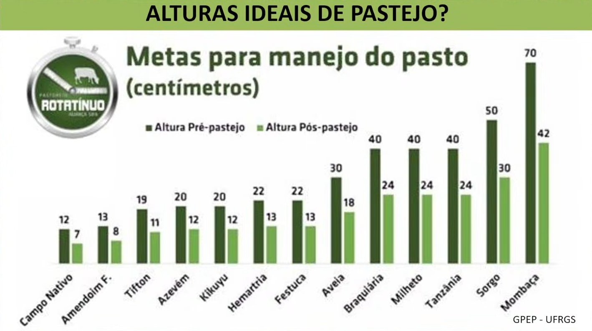
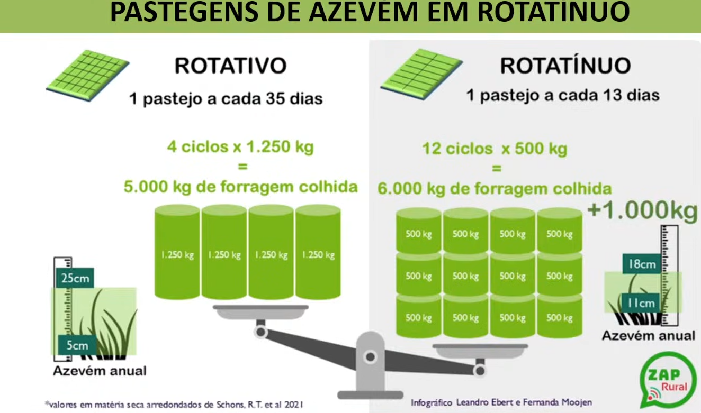

Pastejo rotatínuo é um manejo guiado pela relação entre estrutura do dossel, facilidade de colheita e taxa de ingestão, usando movimentação adaptativa dos animais para manter o pasto dentro de uma faixa funcional. No PampaOS, ele importa porque organiza o raciocínio do gestor em torno de função biológica e variável de controle, e não apenas em torno de um nome de sistema.
Definição
Pastejo rotatínuo é um arranjo de manejo em que o objetivo principal não é “rodar piquetes”, mas manter a pastagem em uma faixa estrutural que preserve alta taxa de ingestão e boa colheita de forragem.
Em vez de tratar a rotação como regra mecânica, o método usa a estrutura do pasto como variável central de decisão e ajusta a circulação dos animais conforme a resposta real da área.
Lógica operacional
Problema que resolve
O sistema tenta resolver um dilema clássico do manejo:
- o pastejo contínuo pode ser simples, mas perde controle fino quando a observação falha;
- o rotacionado clássico pode dar controle, mas às vezes vira burocracia operacional sem aderência à resposta real da pastagem.
O rotatínuo nasce justamente como tentativa de manter elasticidade operacional sem abandonar a disciplina estrutural do campo.
Funcionamento
Na prática, o método depende de observação frequente de:
- altura ou massa funcional da pastagem;
- pressão de pastejo;
- taxa de rebrote;
- heterogeneidade do uso da área;
- tempo de ocupação que o campo suporta sem perder estrutura.
O gestor não gira os lotes apenas porque “chegou o dia”. Ele gira porque a condição do pasto ameaça sair da faixa funcional em que a colheita continua eficiente.
Comparação com outros sistemas
Condições de uso
O método tende a funcionar melhor quando:
- há boa capacidade de leitura da estrutura do pasto;
- o campo apresenta heterogeneidade relevante;
- o sistema busca equilíbrio entre simplicidade e controle;
- o gestor quer evitar tanto subpastejo quanto sobrepastejo.
Riscos de interpretação errada
Alguns erros frequentes são:
- chamar de rotatínuo um contínuo mal monitorado;
- achar que troca ocasional de potreiro já resolve o problema estrutural;
- usar o termo como rótulo sem critério de ajuste;
- ignorar que o método ainda exige observação frequente e julgamento.
Implicações para o PampaOS
Dentro do PampaOS, a relevância do pastejo rotatínuo não está apenas na técnica de manejo, mas na forma como ele força o gestor a raciocinar:
- estrutura do campo como variável de decisão;
- manejo como resposta e não como ritual;
- conversão biológica dependente de leitura ecológica;
- simplicidade operacional com inteligência de ajuste.
Apoio visual

